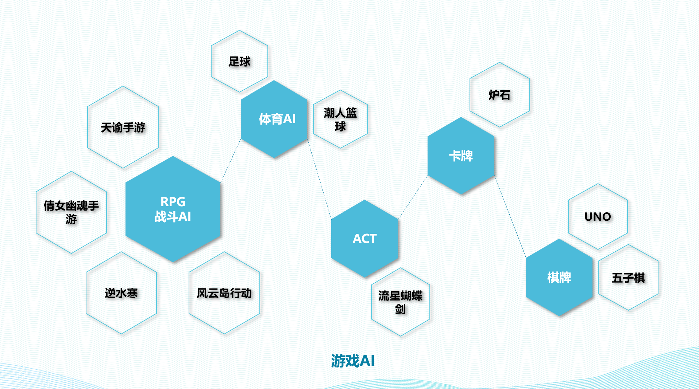
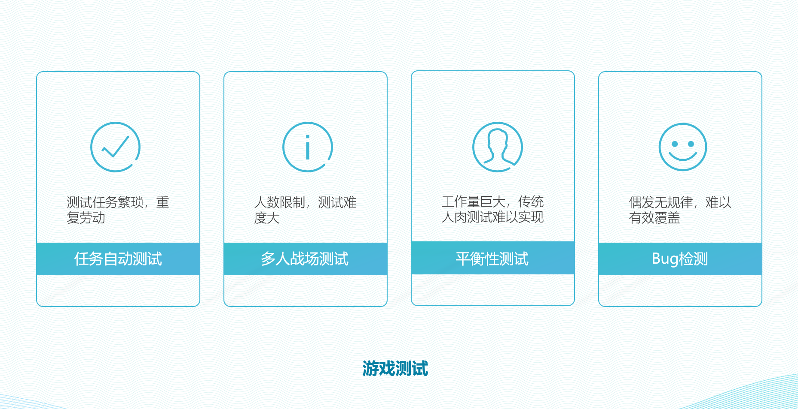
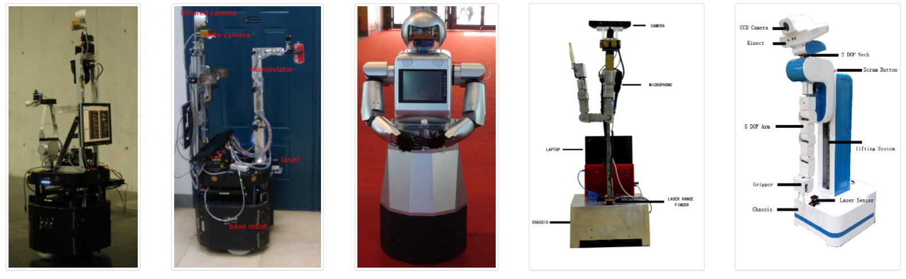
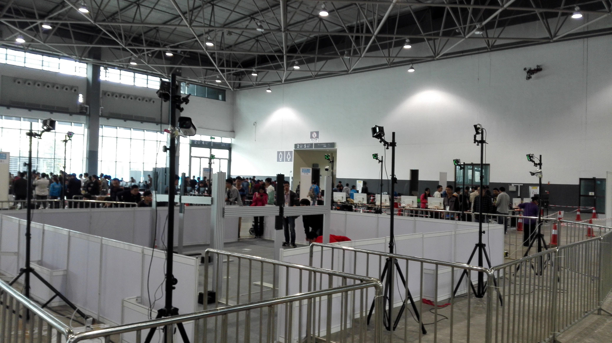
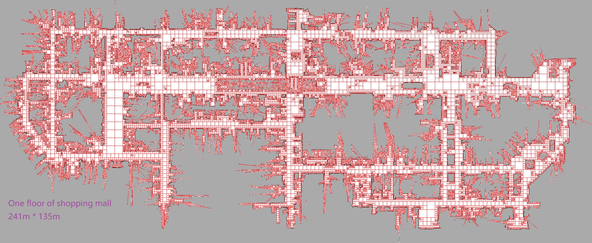

News
[2021.08.18] The Fuxi Robotics Department was established today. I will start a new exploration of AI and Robotics.
[2021.07.01] A paper titled "An Empirical Study of GUI Widget Detection for Industrial Mobile Games" was accepted as an industry paper by FSE 2021.
[2021.05.25] A paper titled "A Future-Oriented Cache Management for Mobile Games" was accepted by COG 2021.
[2021.05.20] A paper titled "GLIB: Towards Automated Test Oracle for Graphically-Rich Applications" was accepted as a research paper by FSE 2021.
[2021.05.08] A paper titled "MetaCURE: Meta Reinforcement Learning with Empowerment-Driven Exploration" was accepted by ICML 2021.
[2021.04.29] A paper titled "Reward-Constrained Behavior Cloning" was accepted by IJCAI 2021.
[2021.01.26] Our talk "Beyond Pre-training: Experiences of Applying Imitation Learning in Game AI" was accepted by the GDC AI Summit 2021.
[2021.01.26] Our team "Salty Fish" won the Second Prize out of 1138 teams in the Football Competition hosted by Google Research and Manchester City F.C.
[2020.09.26] A paper titled "Learning to Utilize Shaping Rewards: A New Approach of Reward Shaping" was accepted by NeurIPS 2020.
[2020.08.04] A paper titled "Regression Testing of Massively Multiplayer Online Role-Playing Games" was accepted by ICSME 2020.
[2020.06.11] Two papers were accepted by COG 2020.
[2020.06.01] A paper titled "Q-value Path Decomposition for Deep Multiagent Reinforcement Learning" was accepted by ICML 2020.
[2020.04.20] Two papers were accepted by IJCAI 2020.
[2020.01.15] Two papers were accepted by AAMAS 2020.
[2019.12.25] Our talk "Building Intelligent Game Testing System in Netease MMORPGs" was accepted by the GDC AI Summit 2020.
[2019.12.20] A paper titled "Action Relation Network: Considering the Effects of Actions in Multiagent Systems" was accepted by ICLR 2020.
[2019.11.11] Two regular papers and one workshop paper were accepted by AAAI 2020.
Research Interest
My research interests lie at the intersection of
Robotics, Reinforcement Learning, and Embodied AI. I am dedicated to building intelligent systems that can perceive, reason, and act in complex real-world environments.
Embodied AI & Robotics (Current Focus)
Currently, I am leading the research on embodied intelligence for construction machinery and general-purpose robots, focusing on end-to-end learning and large-scale data-driven approaches.
- Embodied Foundation Models: Vision-Language-Action (VLA) models, Diffusion Policy, and End-to-End (Sensor-to-Control) learning.
- Sim2Real Transfer: Bridging the reality gap via domain randomization, system identification, and residual policies.
- Data-Driven Robotics: Large-scale data closed-loop systems, imitation learning from expert demonstrations, and human-in-the-loop learning.
- Robotic Systems: Teleoperation, SLAM, multi-sensor fusion, and robust control for unmanned operation.
Deep Reinforcement Learning & Game AI
Previously at Fuxi AI Lab, I led the Game AI research, focusing on applying Deep Reinforcement Learning (DRL) to complex game environments and building large-scale distributed training frameworks.
- Deep Reinforcement Learning: High-efficient, transferable, and explainable DRL; Distributed reinforcement learning frameworks.
- Multi-Agent Learning: Cooperation and competition in large-scale multi-agent environments; Population-based training (PBT).
- Game AI Applications: Automated game testing, intelligent NPC behaviors, and procedural content generation.
Service Robots (Ph.D. Research)
During my graduate studies, I worked on service robots (KeJia Project), with a particular focus on localization, mapping (SLAM), navigation, and path planning in unstructured environments.
Education
| 2022.08-2024.08 |
Postdoc in Control Science and Engineering, Zhejiang University (ZJU) |
Supervisor: Prof. Rong Xiong |
| 2012.9-2017.7 |
Ph.D in Robotics Lab, University of Science and Technology of China(USTC) |
Supervisor: Prof. Xiaoping Chen |
| 2008.9-2012.7 |
B.E. in Computer Science, China University of Petroleum (UPC) |
|
Publications
Some interested papers are listed, visit
Google Scholar for completed publications.
Guangyong Chen, Zhaoxin Zhang, Linfeng Cheng, Chenyang Jin, Shen Yao, Yixiang Wang, Rong Xiong, Yingfeng Chen♦,
“Efficient and robust shoveling control system based on semantic elevation mapping for unmanned loaders,”
Engineering Applications of Artificial Intelligence(EAAI), 2026.
Zitao Zou, Chuguang Wang, Yujing Hu, Xialiang Liu, Biao Xu, Rong Xiong, Changjie Fan, Yingfeng Chen♦, Yue Wang,
“High-Precision and High-Efficiency Trajectory Tracking for Excavators Based on Closed-Loop Dynamics,”
IEEE/RSJ International Conference on Intelligent Robots and Systems(IROS), 2025.
Yanjie Chen, Chuguang Wang, Tianpei Yang, Min Wang, Yingfeng Chen, Jianqiu Zhou, Chen Zhao, Xiaofeng Zhang, ...
“Mastering Robot Control through Point-based Reinforcement Learning with Pre-training,”
Proceedings of the 23rd International Conference on Autonomous Agents and Multiagent Systems(AAMAS), 2024.
Yuechen Wu*, Yingfeng Chen*, Xiaofei Xie, Bing Yu, Changjie Fan and Lei Ma,
“"Regression Testing of Massively Multiplayer Online Role-Playing Games,”
Ke Chen*, Yufei Li*, Yingfeng Chen♦, Changjie Fan, Zhipeng Hu, Wei Yang, Jianye Hao, "GLIB: Towards Automated Test Oracle for Graphically-Rich Applications," ESEC/FSE Research Papers, 2021.
Yu Chen*, Yingfeng Chen*♦, Zhipeng Hu, Tianpei Yang, Changjie Fan, Yang Yu, Jianye Hao, "Learning Action-Transferable Policy with Action Embedding," Published on arXiv, 2021.
Yujing Hu, Weixun Wang, Hangtian Jia, Yixiang Wang, Yingfeng Chen♦, Jianye Hao, Feng Wu, Changjie Fan,
"Learning to Utilize Shaping Rewards: A New Approach of Reward Shaping," Proceedings of the Neural Information Processing Systems(NeurIPS), 2020
Yuechen Wu*, Yingfeng Chen*, Xiaofei Xie, Bing Yu, Changjie Fan and Lei Ma,
“Regression Testing of Massively Multiplayer Online Role-Playing Games,”
Proceedings of the International Conference on Software Maintenance and EvolutionIntelligence(ICSME)
, 2020.
Ruimin Shen, Yan Zheng, Jianye Hao, Zhaopeng Meng, Yingfeng Chen♦, Changjie Fan, Yang Liu,
“Generating Behavior-Diverse Game AIs with Evolutionary Multi-Objective Deep Reinforcement Learning,”
Proceedings of the International Joint Conference on Artificial Intelligence(IJCAI)
, 2020.
Hangtian Jia, Chunxu Ren, Yujing Hu, Yingfeng Chen♦, Tangjie Lv, Changjie Fan, Hongyao Tang, Jianye Hao,
“Mastering Basketball with Deep Reinforcement Learning: An Integrated Curriculum Training Approach,”
Proceedings of the International Conference on Autonomous Agents and MultiAgent Systems(AAMAS)
, 2020.
Yaodong Yang, Jianye Hao, Guangyong Chen, Hongyao Tang, Yingfeng Chen, Yujing Hu, Changjie Fan, Zhongyu Wei;
“Q-value Path Decomposition for Deep Multiagent Reinforcement Learning,”
Proceedings of the International Conference on Machine Learning(ICML), 2020.
WenJi Zhou, Yang Yu, Yingfeng Chen, Kai Guai, Tangjie Lv, Changjie Fan, ZhiHua Zhou,
“Reinforcement learning experience reuse with policy residual representation,”
Proceedings of the International Joint Conference on Artificial Intelligence(IJCAI), 2019.
Haotian Fu, Hongyao Tang, Jianye Hao; Zihan Lei, Yingfeng Chen, Changjie Fan,
“Deep Multi-Agent Reinforcement Learning with Discrete-Continuous Hybrid Action Spaces,”
Proceedings of the International Joint Conference on Artificial Intelligence(IJCAI), 2019.
Yingfeng Chen, Feng Wu, Wei Shuai, Xiaoping Chen,
“Robots serve humans in public places—KeJia robot as a shopping assistant,”
International Journal of Advanced Robotic Systems, 2017.
Yingfeng Chen, Shuai Wei, Xiaoping Chen,
“A probabilistic, variable-resolution and effective quadtree representation for mapping of large environments,”
Proceeding of the IEEE International Conference on Advanced Robotics(ICAR), 2015.
Projects
2021.10~Present: Fuxi Robotic in Netease（网易伏羲机器人）
Role: Head of Robotic Algorithms | General Manager & CTO of Netease Lingdong
Responsible for the R&D of embodied intelligence algorithms and systems for construction machinery, covering teleoperation, semi-automatic collaboration, unmanned operation, and multi-machine coordinated scheduling.
[Product Homepage]
[Loader Demo Video]
[Excavator Demo Video]
- Advanced Embodied AI Models (VLA/Diffusion Policy): Led the development of an industry-first End-to-End (Sensor-to-Control) Embodied AI Large Model ("Lingjue") for construction machinery.
- Incorporated VLA (Vision-Language-Action) architecture and Transformer sequence modeling for direct multi-modal input to action prediction.
- Combined Diffusion Policy with flow matching to achieve L4-level autonomous operation (e.g., automatic loading) in complex open-pit mine scenarios, realizing zero-intervention operation in a significant portion of the duty cycle.
- Achieved cross-brand generalization (software-defined hardware) and overcame nonlinear control challenges in hydraulic systems.
- Large-Scale Data Closed-Loop & Training Platform: Built a comprehensive embodied intelligence training framework and data closed-loop system.
- Designed a "Video → Expert → RL" three-stage training paradigm.
- Implemented a high-efficiency data pipeline supporting 300TB+/month of multi-modal data flow for continuous model iteration.
- System & Commercialization: Developed key remote control technologies (low-latency video, data collection) and led the deployment of unmanned loaders and intelligent excavators (SLAM, multi-sensor fusion, planning, control) for 24-hour "dark site" operations. Achieved significant commercial success and widespread deployment across multiple provinces in cooperation with major state-owned enterprises.
2017.07~2021.12 : Fuxi AI Lab in Netease （网易伏羲实验室）
We mainly focus in landing reinforcement learning to Game AI and agent-based Game testing, more related applications are also explored,such as game generation, GPU cache managerment and so on.
Game AI:

Game Testing:

2012.07~2017.07 : Kejia Project, Robotic Lab in USTC
Ke Jia Service Robot: Mapping, Localization and Navigation
[Demo Video]

KeJia Standard Robot Platform has been used in the annual RoboCup@Home competition since 2009 with outstanding achievements---a champion and three runners-up in the past 5 years. After the 8-year evolution through practice in competition, research and education, now the platform is suitable for both specialists and newcomers in Robotics and related fields.
[Technical Report]
[Demo Video]
| Event |
Place |
Award |
Role |
RoboCup China Open@Home league 2013 |
Hefei, China |
Champion |
Major |
RoboCup@Home league 2014 |
Joao Pessoa, Brazil |
Champion |
Major |
RoboCup China Open@Robot Benchmarking 2015 |
Guiyang, China |
Champion |
Leader |
RoboCup@Benchmarking Service Robots 2015 |
Hefei, China |
Champion |
Leader |
Guide Robot in Shopping Mall
[Technical Report]
[Demo Video]
Kejia shopping mall robot is adapted from Kejia service robot platform, it was deployed in a large modern shopping mall in Hefei with the size of 30,000 m2 and more than 160 shops. Field trials were conducted for 40 days, which is probably the first shopping mall guide robot in China.
Motion Capture System for Robot

For Robot Testing:
- Cleaning Robots Test
- Anhui Robot Technology Standard Innovation Base
For Robot Calibration:
- General Batch-Calibration Framework
Large Scale SLAM for Indoor and Outdoor
[Technical Report]

Services
- Executive Committee Member, CCF Intelligent Robotics Professional Committee, 2024-Present
- Enterprise Mentor, School of Data Science, USTC, 2021-Present
- Program Committee Member / Reviewer for Top AI & Robotics Conferences (NeurIPS, ICML, AAAI, IJCAI, ICRA, IROS)
Awards
- Hangzhou High-Level Talent (Category C), 2025
- Gold Award (1st Place), Global Digital Trade Innovation Competition, 2025
- Top 10 Youth Science and Technology Talents, Binjiang District, 2024
- Champion, ICRA RoboDepth Competition, 2023
- Global 2nd Place, Google DeepMind Football AI Competition, 2020
- Best Paper Award, ASE, 2019
- Champion of the Robocup@Benchmarking Service Robots, 2015
- Champion of the World Robocup@Home Competition, Brazil (The first Asian champion), 2014
- Outstanding Undergraduate, China University of Petroleum, 2012
- First Prize of Province in the competition of "FreeScale Smart Car", 2011
- National Scholarship, Ministry of Education, 2011
- First-class scholarship, 2009&2010
Updating time: 2025.12.15
备案号:浙ICP备2023022379号-1